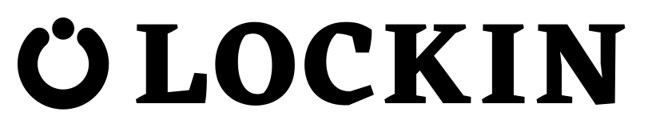

Your partner in deep work. — A focus ring left open, with the accent dot as the piece that closes it, set against LOCKIN in Eczar Bold. Everything runs heavy.
Lockin had two brand fragments doing nothing in particular: a plain ring as the favicon, and a 10px accent dot in the header. The mark makes them one statement — the ring is the session, open and unfinished, and the dot is what completes it.
The gap isn't eyeballed. It's solved from the dot outward, wide enough to clear both round caps, the dot itself, and a set margin of air either side; change the dot and the gap re-solves. The dot stays wider than the stroke deliberately — that's what stops it reading as the head of a loading spinner and makes it read as a separate piece dropping into place.
The ring's stroke is 28% of its own diameter, tuned up from a lighter first cut so it carries the same weight as Eczar's bold stems instead of looking thin beside them.
LOCKIN is set in Eczar Bold (weight 700, version 2.000) — a high-contrast display face by Vaibhav Singh at Rosetta Type Foundry, licensed under the SIL Open Font License. Caps, tracked out 40/1000 em so the heavy serifs get air.
In the logo files the letters are converted to outlines,
so the artwork never depends on the font being installed. The font itself ships in
fonts/ with its licence, and is installed to your
~/Library/Fonts for setting new headlines in Photoshop.
The mark sits to the left of the wordmark at 1.16× cap height, with a gap of 0.30× cap height. Use this wherever there's horizontal room — site header, README, flyer, banner.

one-colour · printThe mark drops into the word and becomes the letter, which removes the two-circle repetition of the primary lockup. Tighter and more distinctive, but it needs size to stay legible — don't take it below 150px wide.
The mark alone, for app icons, favicons, avatars and anywhere square. Below 48px it switches to the favicon cut — stroke up to 34% of diameter, tighter margins — so the ring and the dot stay distinct instead of blurring together.
Lockin already re-tints --accent when the weather
shifts the room — rain, night, clear, snow, cloud. The dot follows it. It's the only part of the
brand that changes colour, and only ever to an accent the app is already using.
Keep free space on all four sides equal to the diameter of the dot. Minimum sizes: primary lockup 120px wide, O lockup 150px, mark 16px using the favicon cut.
| File | Format | Use |
|---|---|---|
lockin-lockup-dark.svg | vector | Primary — mark + LOCKIN, dark |
lockin-lockup-light.svg | vector | Primary, light backgrounds |
lockin-lockup-white/black.svg | vector | One-colour reverse and print |
lockin-lockup-o-*.svg | vector | Alternative lockup, mark as the O |
lockin-icon.svg | vector | App icon / square mark |
lockin-favicon.svg | vector | Heavier cut for 16–48px |
lockin-*-mode-*.svg | vector | Focus-mode accent variants |
png/lockin-icon-{16…1024}.png | raster, alpha | Favicons, app icons |
png/lockin-lockup-*-{800,2400}.png | raster, alpha | Slides, flyer, banner |
fonts/Eczar-Bold.ttf, OFL.txt | font | Eczar Bold + its licence |